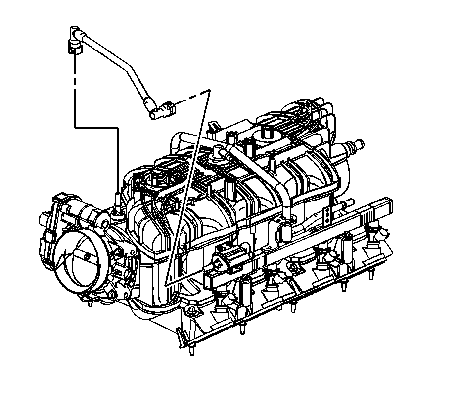
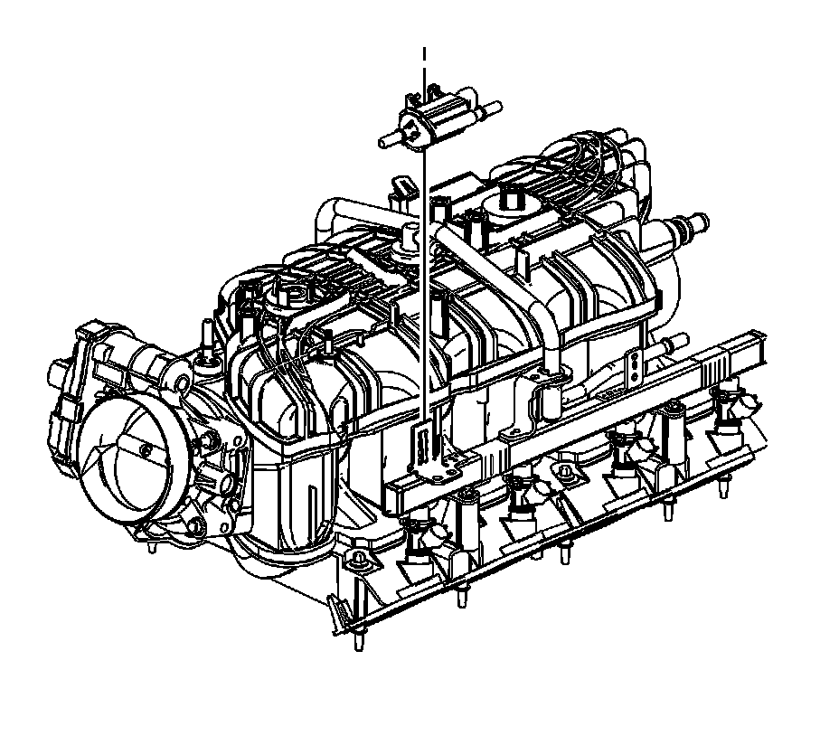

Canister Purge Solenoid: Service and Repair
EVAPORATIVE EMISSION CANISTER PURGE SOLENOID VALVE REPLACEMENT
REMOVAL PROCEDURE
IMPORTANT: Clean all evaporative emission (EVAP) line connections and surrounding areas prior to disconnecting, in order to avoid possible EVAP system contamination.

1. Remove the air cleaner outlet duct.
2. Disconnect the EVAP line quick connect fitting from the EVAP canister purge solenoid.

3. Disconnect the engine wiring harness electrical connector (2) from the EVAP canister purge solenoid.

4. Disengage the retainer securing the EVAP canister purge solenoid to the fuel rail.
5. Remove the EVAP canister purge solenoid.
INSTALLATION PROCEDURE
1. Install the EVAP canister purge solenoid.
2. Install the EVAP canister purge solenoid to the fuel rail and engage the retainer.
3. Connect the engine wiring harness electrical connector (2) to the EVAP canister purge solenoid.
4. Connect the EVAP line quick connect fitting to the EVAP canister purge solenoid.
5. Install the air cleaner outlet duct.